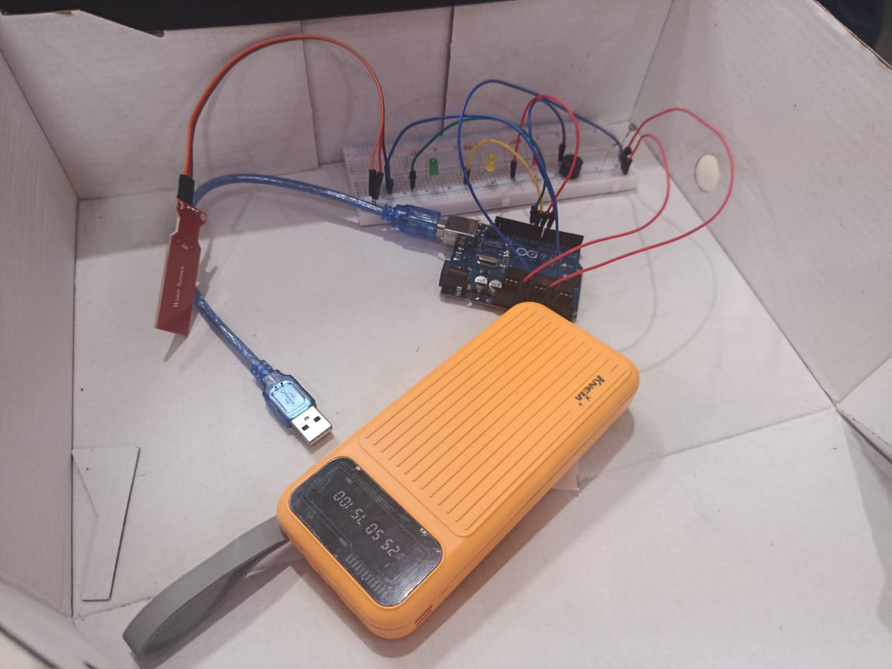
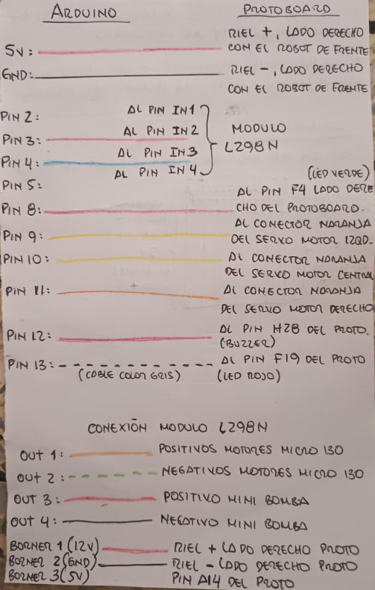
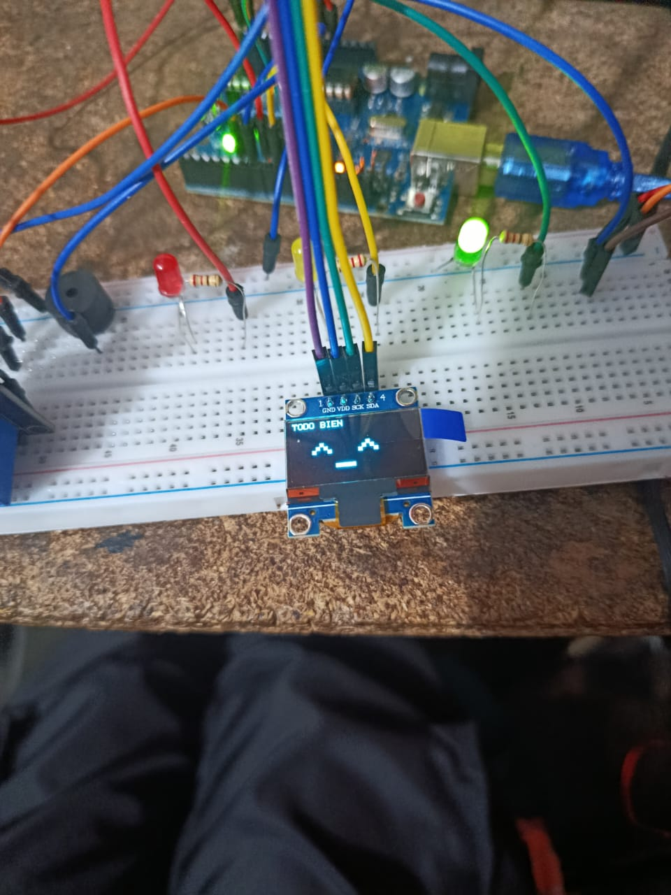
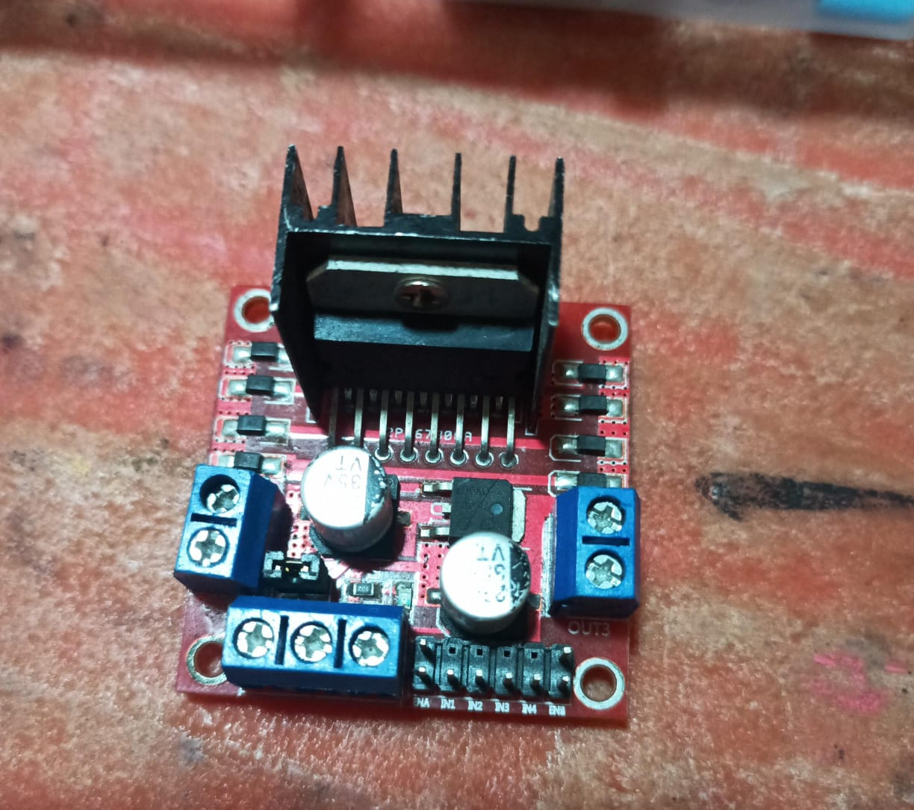
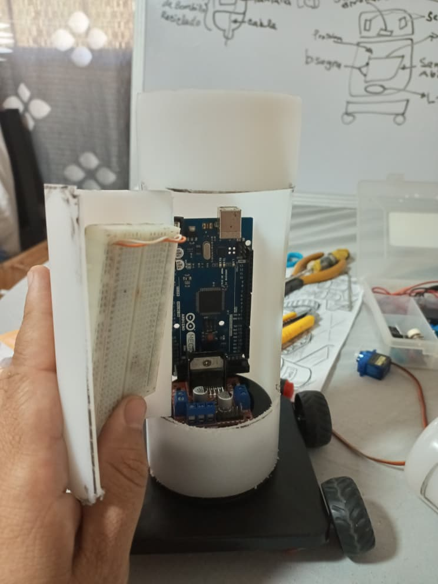
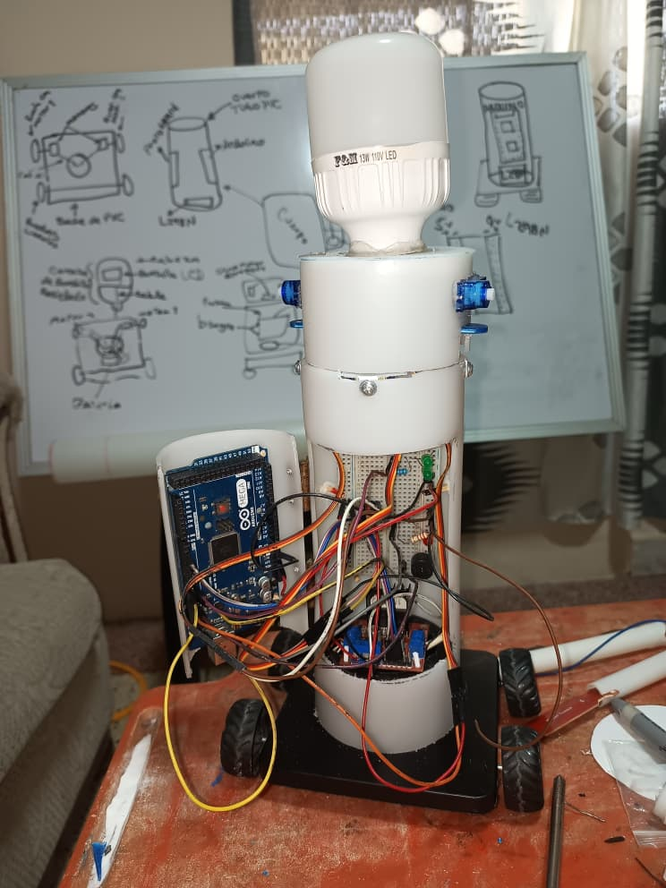
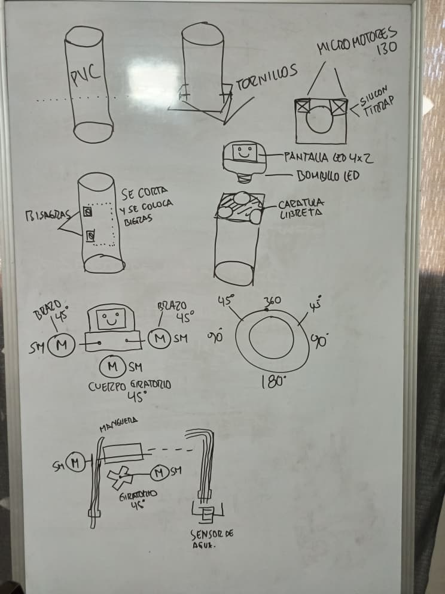

El guardián tecnológico de tus plantas
Eco-Robot is un prototipo robótico móvil diseñado para automatizar y optimizar el cuidado de cultivos en entornos urbanos. Mediante la fusión de hardware de control dinámico y sensores de análisis ambiental, gestiona el riego de forma milimétrica mediante una bomba hídrica integrada y un chasis con tracción autónoma.
Distribución estratégica de las etapas de control y potencia:
Procesa los datos algorítmicos en tiempo real, interpretando las señales analógicas para ejecutar decisiones automatizadas.
Punto central de distribución de señales de control y buses de alimentación entre componentes.
Etapa de potencia indispensable para modular el voltaje y suministrar el torque requerido por los motores.
Evolución técnica del proyecto dividida por hitos de desarrollo:
Desarrollo del primer núcleo de control en banco de pruebas. Calibración de variables críticas y filtrado de señales analógicas primarias.
Modelado matemático del circuito divisor de tensión para la fotorresistencia en pizarra, permitiendo al firmware interpretar transiciones lumínicas.
Programación de la interfaz visual en pantalla OLED (I2C) desplegando telemetría básica y strings dinámicos de estado del sistema (^ _ ^ TODO BIEN).
Estructuraciones del bucle cíclico (void loop) mediante máquinas de estado y condicionales anidados para las rutinas mecánicas.
Migración a una fuente de alimentación portátil desacoplada (Power Bank) para eliminar el ruido eléctrico de la red y validar la portabilidad en exteriores.
Corte, mecanizado e integración del chasis cilíndrico final, ensamble de la servotransmisión, motores de alto torque y calibración de bombeo.
Registros multimedia organizados por módulos de trabajo:

Montaje primario

Cableado de control

Telemetría en tiempo real

Test de desacoplamiento

Estructura del Chasis

Ensamble estructural

Calibración analógica y modelado matemático
Riego de precisión basado puramente en curvas de humedad real del sustrato, mitigando el desperdicio del recurso en un 40% frente a sistemas temporizados tradicionales.
Ecosistema escalable para micro-cultivos automatizados en zonas urbanas densas, reduciendo la huella de carbono logística de transporte de alimentos.